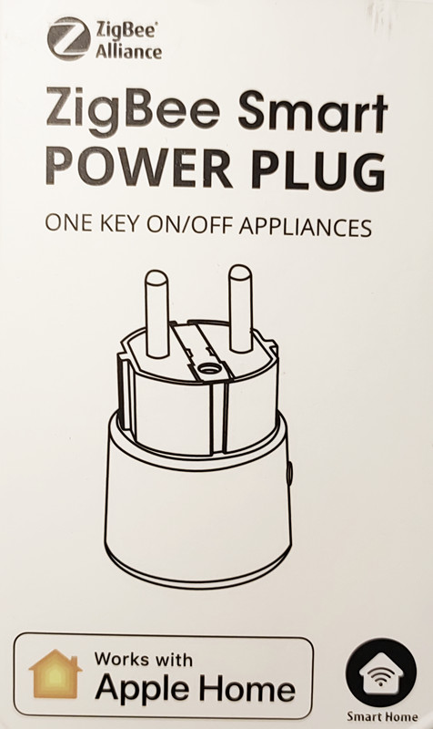
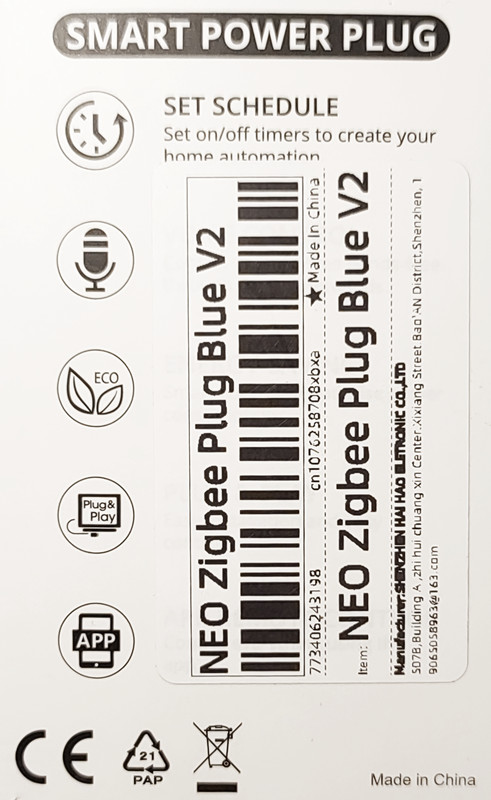
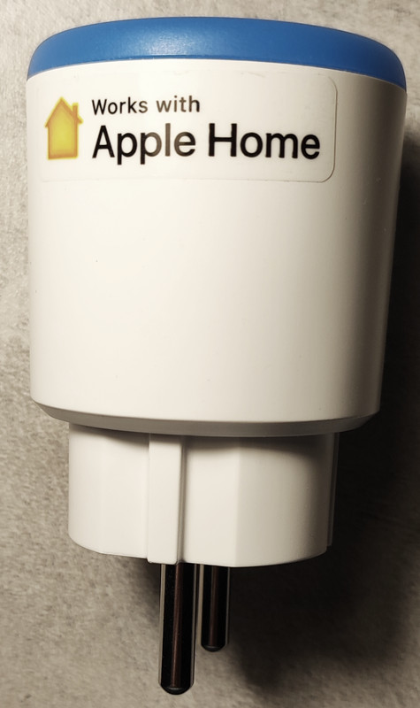
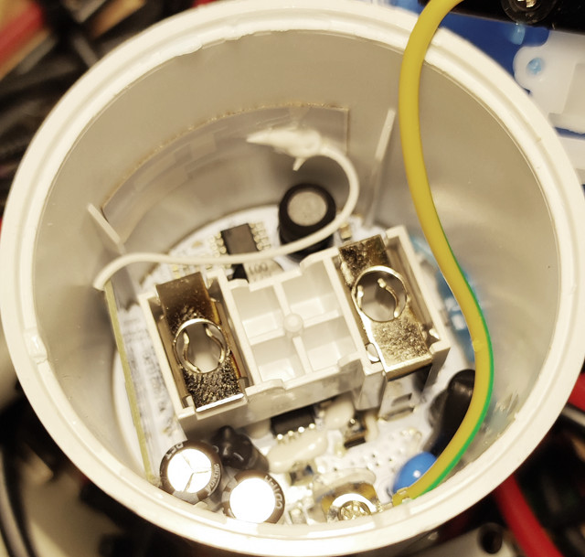
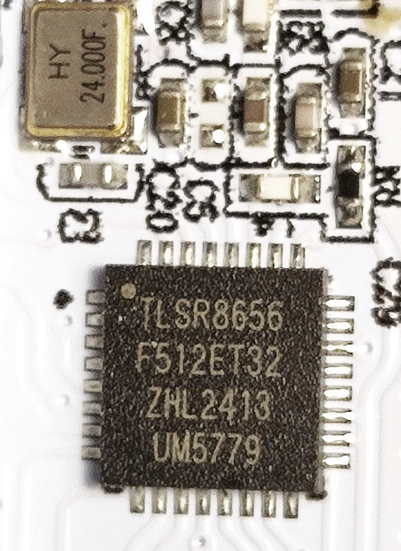
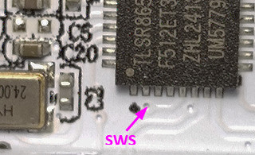

TS011F_TZ3000_gjnozsaz: Tuya ZigBee Switch with Power Monitor
Chip: TLSR8656, Sensor: BL0942
Do not use ZigbeeOTA!
The original firmware uses a non-standard Zigbee OTA!
The lid of the case is glued, but it can be easily opened by lifting the lid around the circumference with a sharp object.
Custom FirmWare




Original FullFlash bin